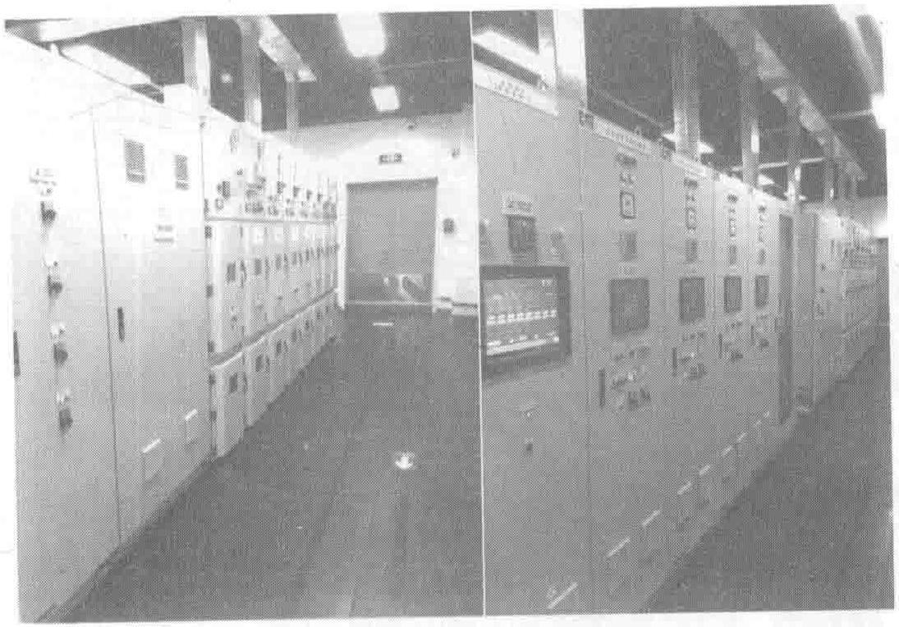
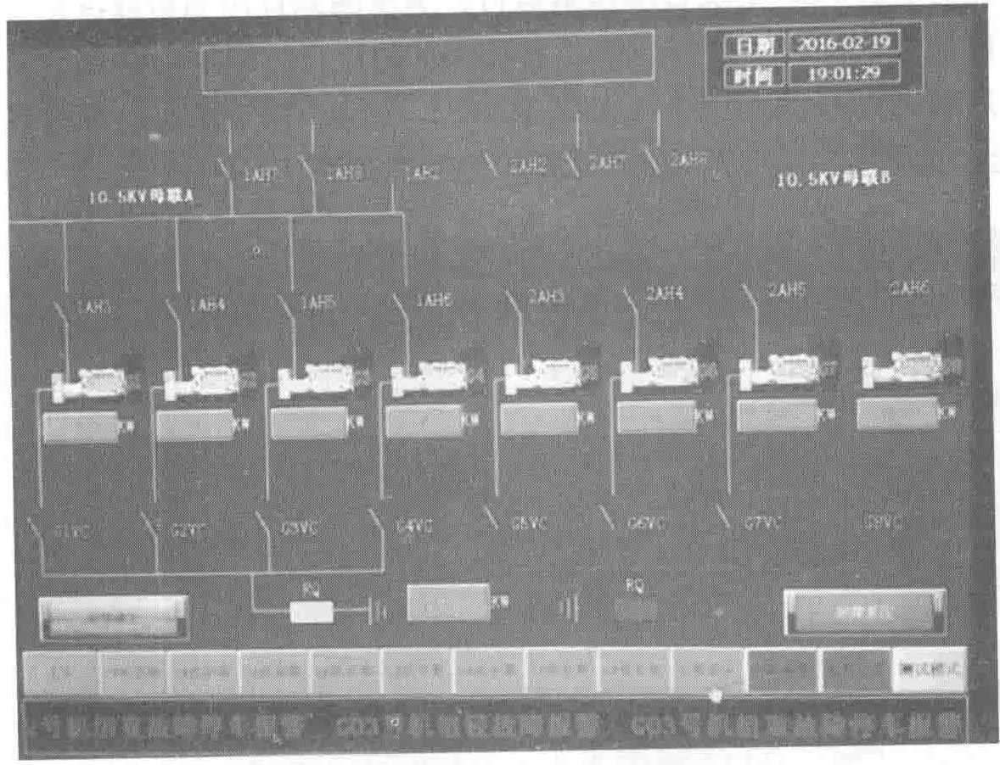

2）柴油发电机组的并机控制
机组控制采用进口并机控制模块（见图10-9），15英寸彩色触摸屏显示。可实现自动启动、自动投入、自动并机、自动加载和卸载顺序控制、自动负载均分、自动备用冗余控制、负载需求控制、负载优先级控制、一键停机、市电切换管理、系统智能监控、BMS信息提供、机组测试控制、实现多种形式的N+1控制等功能。

监控页面显示丰富（见图10-10），可显示每台机组运行状态及机组参数列表、并机状态、并机方式、故障列表、切换列表、告警信息、实时负载均衡等。